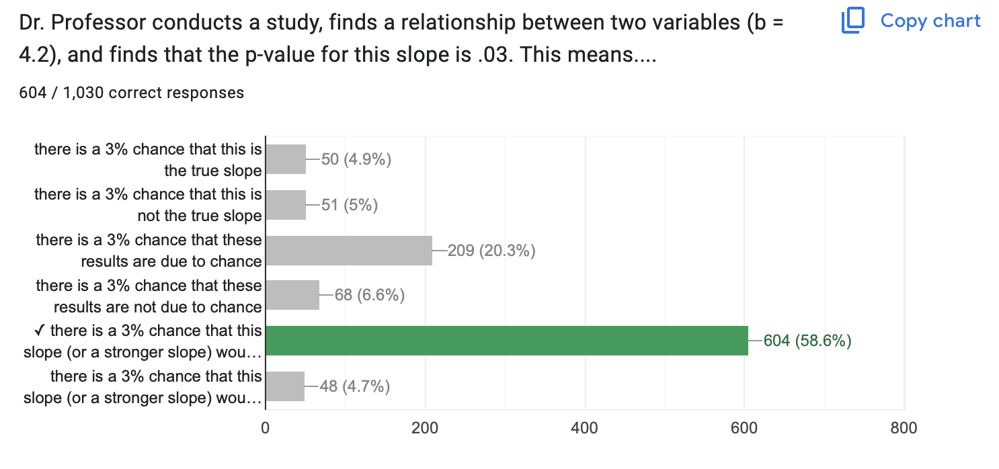

Welcome Back :)
Check-In (No R Needed): Testing Theories
<- lm (Handwash ~ gender, data = d)summary (mod1)
Call:
lm(formula = Handwash ~ gender, data = d)
Residuals:
Min 1Q Median 3Q Max
-3.5659 -0.5659 0.4341 0.7437 0.7437
Coefficients:
Estimate Std. Error t value Pr(>|t|)
(Intercept) 3.25628 0.06065 53.688 < 2e-16 ***
genderW 0.30957 0.08515 3.636 0.000313 ***
---
Signif. codes: 0 '***' 0.001 '**' 0.01 '*' 0.05 '.' 0.1 ' ' 1
Residual standard error: 0.8556 on 402 degrees of freedom
(438 observations deleted due to missingness)
Multiple R-squared: 0.03184, Adjusted R-squared: 0.02943
F-statistic: 13.22 on 1 and 402 DF, p-value: 0.0003131
plotmeans (Handwash ~ gender, data = d,col = "white" , barcol = "white" , ylim = c (1 ,5 ))
NHST Review.
Direction & Strength of a Relationship
Hard to evaluate strength across models if the units differ too.
The amount of variation in an effect you might expect to find due to chance if the null hypothesis were “true”.
…about slope! Large slope & sampling error = NOT SIGNIFICANT
…about size : you can be VERY confident that a small effect is not due to sampling error.…about importance : why does the effect matter?…about truth : our estimates of sampling error are all made up.
A p-value of .03 means…there is a 3% chance that this slope (or a stronger slope) would be found due to chance if the true correlation was zero.

More Practice
Evaluate the relationships between the variables (slope, significance, importance)
Is there a relationship between narcissism (DV = NPI) and testosterone?
<- read.csv ("~/Dropbox/!WHY STATS/Chapter Datasets/Hormone Data/hormone_dataset.csv" , stringsAsFactors = T)<- lm (NPI ~ test, data = h)summary (mod1)
Call:
lm(formula = NPI ~ test, data = h)
Residuals:
Min 1Q Median 3Q Max
-1.29549 -0.36339 -0.02748 0.27697 1.36124
Coefficients:
Estimate Std. Error t value Pr(>|t|)
(Intercept) 2.882071 0.126950 22.702 <2e-16 ***
test 0.003894 0.001502 2.593 0.0112 *
---
Signif. codes: 0 '***' 0.001 '**' 0.01 '*' 0.05 '.' 0.1 ' ' 1
Residual standard error: 0.5375 on 84 degrees of freedom
(36 observations deleted due to missingness)
Multiple R-squared: 0.07414, Adjusted R-squared: 0.06311
F-statistic: 6.726 on 1 and 84 DF, p-value: 0.01121
plot (NPI ~ test, data = h)abline (mod1, lwd = 5 )
Is there a relationship between narcissism (DV = NPI) and sex?
library (gplots)<- lm (NPI ~ sex, data = h)summary (mod2)
Call:
lm(formula = NPI ~ sex, data = h)
Residuals:
Min 1Q Median 3Q Max
-1.47375 -0.34557 -0.02989 0.36079 1.36397
Coefficients:
Estimate Std. Error t value Pr(>|t|)
(Intercept) 3.5365 0.1478 23.925 <2e-16 ***
sex -0.2627 0.1074 -2.446 0.016 *
---
Signif. codes: 0 '***' 0.001 '**' 0.01 '*' 0.05 '.' 0.1 ' ' 1
Residual standard error: 0.5245 on 112 degrees of freedom
(8 observations deleted due to missingness)
Multiple R-squared: 0.05073, Adjusted R-squared: 0.04225
F-statistic: 5.985 on 1 and 112 DF, p-value: 0.01598
plotmeans (NPI ~ sex, data = h, connect = F)
Is there a relationship between testosterone (DV = test) and sex?
<- lm (test ~ sex, data = h)summary (mod3)
Call:
lm(formula = test ~ sex, data = h)
Residuals:
Min 1Q Median 3Q Max
-60.144 -17.211 -3.365 12.111 137.486
Coefficients:
Estimate Std. Error t value Pr(>|t|)
(Intercept) 139.972 9.935 14.088 < 2e-16 ***
sex -49.288 7.208 -6.838 1.01e-09 ***
---
Signif. codes: 0 '***' 0.001 '**' 0.01 '*' 0.05 '.' 0.1 ' ' 1
Residual standard error: 31.34 on 88 degrees of freedom
(32 observations deleted due to missingness)
Multiple R-squared: 0.347, Adjusted R-squared: 0.3396
F-statistic: 46.76 on 1 and 88 DF, p-value: 1.014e-09
plotmeans (test ~ sex, data = h, connect = F)
In models 1-3, we wee
Testosterone is related to narcissism.
Sex is related to testosterone.
Sex and testosterone are related to each other……
In models 1-3, we wee
Testosterone is related to narcissism.
Sex is related to testosterone.
Sex and testosterone are related to each other……
<- lm (NPI ~ sex + test, data = h)summary (mod4)
Call:
lm(formula = NPI ~ sex + test, data = h)
Residuals:
Min 1Q Median 3Q Max
-1.31150 -0.36048 -0.02691 0.27507 1.35277
Coefficients:
Estimate Std. Error t value Pr(>|t|)
(Intercept) 2.946551 0.315506 9.339 1.37e-14 ***
sex -0.034852 0.155946 -0.223 0.8237
test 0.003646 0.001875 1.944 0.0552 .
---
Signif. codes: 0 '***' 0.001 '**' 0.01 '*' 0.05 '.' 0.1 ' ' 1
Residual standard error: 0.5405 on 83 degrees of freedom
(36 observations deleted due to missingness)
Multiple R-squared: 0.07469, Adjusted R-squared: 0.0524
F-statistic: 3.35 on 2 and 83 DF, p-value: 0.03989
BREAK TIME : MEET BACK AT 3:45
GOAL : Define a Likert Scale
RECAP : Likert Scale (Self-Esteem)
IN R : Three Steps
<- read.csv ("~/Dropbox/!WHY STATS/Chapter Datasets/Self-Esteem Dataset/data.csv" ,stringsAsFactors = T,na.strings = "0" , sep = " \t " ) # 0 = missing data! head (d) # checking to make sure it loaded okay
Q1 Q2 Q3 Q4 Q5 Q6 Q7 Q8 Q9 Q10 gender age source country
1 3 3 1 4 3 4 3 2 3 3 1 40 1 US
2 4 4 1 3 1 3 3 2 3 2 1 36 1 US
3 2 3 2 3 3 3 2 3 3 3 2 22 1 US
4 4 3 2 3 2 3 2 3 3 3 1 31 1 US
5 4 4 1 4 1 4 4 1 1 1 1 30 1 EU
6 4 4 1 3 1 3 4 2 2 1 2 25 1 CA
summary (as.factor (d$ Q1)) # making sure zeros got turned into NAs
1 2 3 4 NA's
3011 8647 21018 15200 98
<- d[,c (1 : 2 ,4 ,6 ,7 )] # pos-keyed items (from the codebook) <- d[,c (3 ,5 ,8 : 10 )] # neg-keyed items (from the codebook) <- 5 - negkey.df # reverse scoring the neg-keyed items <- data.frame (poskey.df, negkeyR.df) # bringing it all 2gether. head (SELFES.DF)
Q1 Q2 Q4 Q6 Q7 Q3 Q5 Q8 Q9 Q10
1 3 3 4 4 3 4 2 3 2 2
2 4 4 3 3 3 4 4 3 2 3
3 2 3 3 3 2 3 2 2 2 2
4 4 3 3 3 2 3 3 2 2 2
5 4 4 4 4 4 4 4 4 4 4
6 4 4 3 3 4 4 4 3 3 4
library (psych) # loading the library :: alpha (SELFES.DF) # alpha reliability.
Reliability analysis
Call: psych::alpha(x = SELFES.DF)
raw_alpha std.alpha G6(smc) average_r S/N ase mean sd median_r
0.91 0.91 0.92 0.52 11 0.00058 2.6 0.7 0.52
95% confidence boundaries
lower alpha upper
Feldt 0.91 0.91 0.91
Duhachek 0.91 0.91 0.91
Reliability if an item is dropped:
raw_alpha std.alpha G6(smc) average_r S/N alpha se var.r med.r
Q1 0.90 0.90 0.91 0.51 9.5 0.00064 0.0089 0.51
Q2 0.91 0.91 0.91 0.52 9.7 0.00063 0.0085 0.52
Q4 0.91 0.91 0.91 0.53 10.3 0.00061 0.0081 0.53
Q6 0.90 0.90 0.90 0.50 9.2 0.00067 0.0087 0.51
Q7 0.90 0.90 0.91 0.51 9.3 0.00066 0.0089 0.51
Q3 0.90 0.90 0.91 0.51 9.3 0.00066 0.0094 0.51
Q5 0.90 0.91 0.91 0.52 9.6 0.00065 0.0098 0.51
Q8 0.91 0.91 0.92 0.54 10.7 0.00059 0.0064 0.54
Q9 0.90 0.91 0.91 0.52 9.6 0.00065 0.0085 0.52
Q10 0.90 0.90 0.90 0.51 9.3 0.00067 0.0086 0.51
Item statistics
n raw.r std.r r.cor r.drop mean sd
Q1 47876 0.76 0.77 0.75 0.70 3.0 0.87
Q2 47658 0.73 0.74 0.71 0.66 3.1 0.79
Q4 47751 0.66 0.68 0.62 0.59 2.9 0.81
Q6 47809 0.81 0.81 0.79 0.75 2.6 0.92
Q7 47758 0.79 0.79 0.77 0.74 2.4 0.93
Q3 47751 0.79 0.79 0.76 0.73 2.7 0.95
Q5 47781 0.76 0.76 0.72 0.69 2.6 0.98
Q8 47797 0.64 0.63 0.56 0.54 2.3 0.96
Q9 47728 0.76 0.75 0.73 0.69 2.2 0.99
Q10 47772 0.81 0.80 0.78 0.74 2.4 1.07
Non missing response frequency for each item
1 2 3 4 miss
Q1 0.06 0.18 0.44 0.32 0.00
Q2 0.04 0.13 0.50 0.33 0.01
Q4 0.05 0.21 0.50 0.24 0.00
Q6 0.14 0.33 0.37 0.17 0.00
Q7 0.18 0.34 0.35 0.14 0.00
Q3 0.13 0.28 0.37 0.22 0.00
Q5 0.14 0.32 0.32 0.22 0.00
Q8 0.21 0.41 0.24 0.14 0.00
Q9 0.27 0.40 0.20 0.14 0.01
Q10 0.24 0.33 0.22 0.22 0.00
$ SELFES <- rowMeans (SELFES.DF, na.rm = T) # creating the scale hist (d$ SELFES, col = 'black' , bor = 'white' , # the graph main = "Histogram of Self-Esteem" , xlab = "Self-Esteem Score" , breaks = 15 )
PLAN : Defining a Likert Scale
What variables are measured with multiple items?
Are any reverse scored? (subtract from sum of low + high range of response scale to negatively key)
GOAL : one variable that combines (average or sums) the multiple items together.
GOAL : Create a summary table.
library (jtools)export_summs (mod1, mod2, mod4, error_pos = "right" ,coefs = c ("Testosterone" = "test" ,"Sex (0 = M; 1 = F)" = "sex" ), digits = 3 )
Model 1 Model 2 Model 3
Testosterone 0.004 * (0.002) 0.004 (0.002)
Sex (0 = M; 1 = F) -0.263 * (0.107) -0.035 (0.156)
N 86 114 86
R2 0.074 0.051 0.075
*** p < 0.001; ** p < 0.01; * p < 0.05.
PLAN : Defining Your Models.
Write out your linear model.
Define and graph your variables.
do the data look good?
how do your participants vary?
Define your bivariate linear models.
what’s the pattern look like
what’s the slope and \(R^2\) value?
Define the multivariate model
mod3 <- lm(DV ~ IV1 + IV2, data = d)NO GRAPH FOR THIS!
can play around with jtools to create a summary table if time :)
THE END.